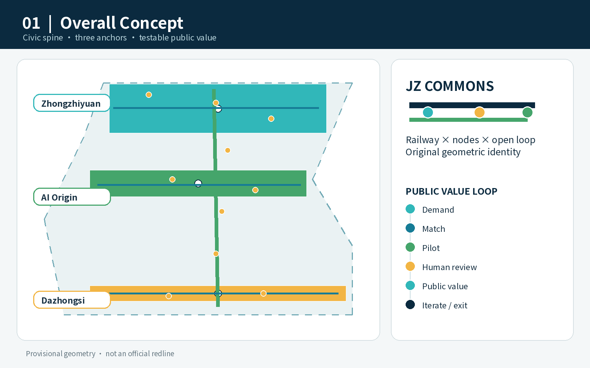
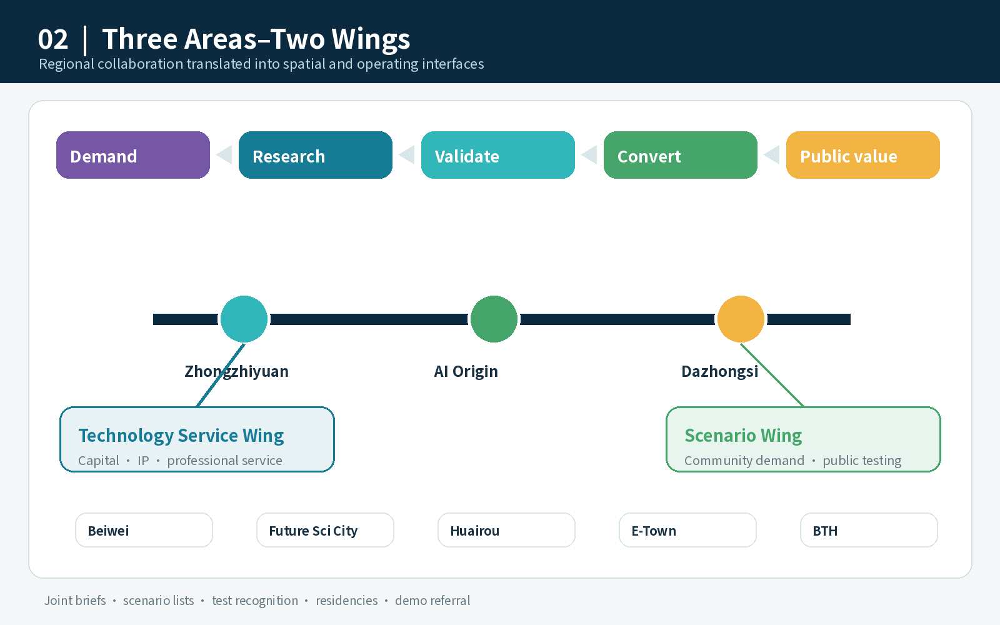
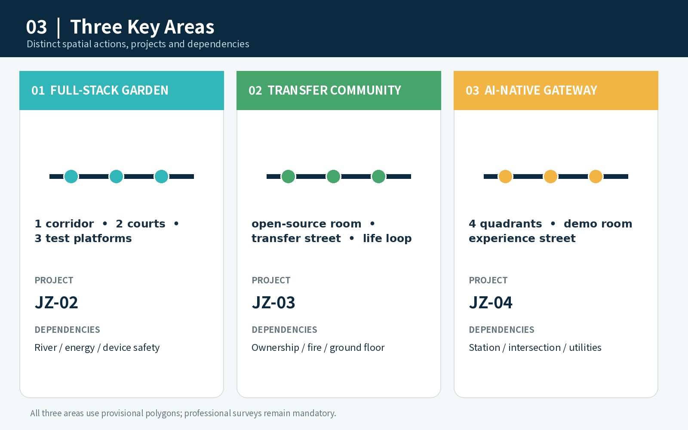
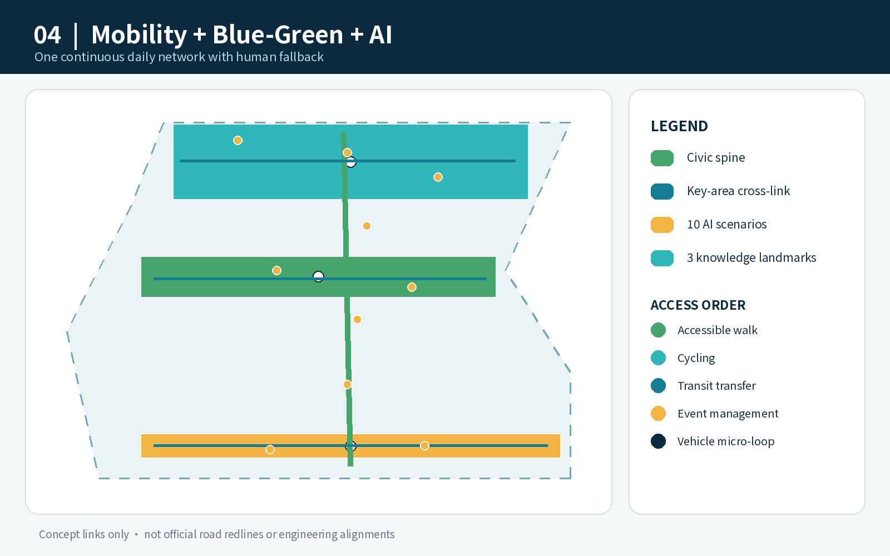
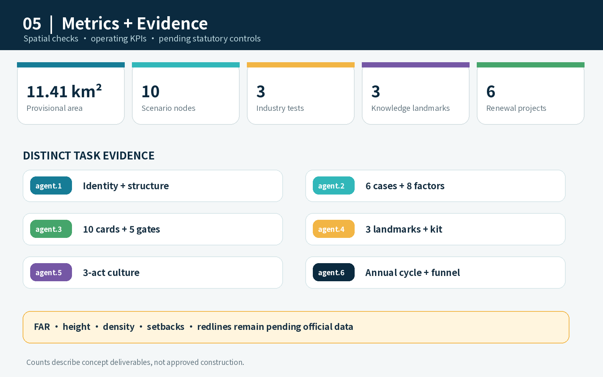

Overview

One spine, three anchors, two wings, ten test scenes and a blue-green mobility loop. Every scenario keeps human fallback and measurable exit conditions.
Overview map · Three-level scope · Land-use zoning · Mobility · Blue-green public space · Buildings · Renewal projects · AI scenarios · Core metrics · Task coverage · Self-check status · Sources · Assumptions




